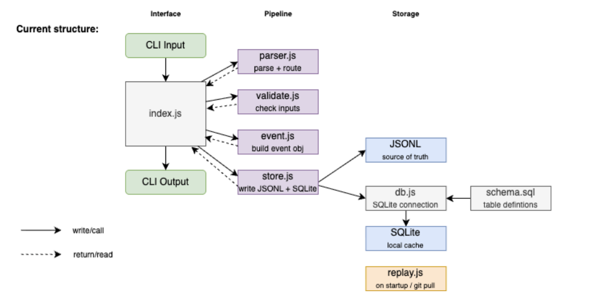

Manta
A local-first issue tracker for the terminal. No accounts, no cloud —
issues live in your project under .manta/ and sync with
your team through git.
Install
Manta runs on Bun. Install globally from npm:
bun install -g manta-itThen try:
mt version
mt create "My first issue" --priority p1
mt viewWhat you can do
- Create, update, close, delete issues from the CLI
-
Browse issues with
mt view(interactive table, ESC to exit) -
Stay in sync after
git pullwithmt sync - Point AI agents at issue IDs in your repo — no extra integration

Guide sections
- Getting started — install, first commands, where data lives
- Commands — create, update, view, sync, and more
- Reference — fields, flags, and auto-assigned metadata
Contributors & course reviewers:
Architecture docs and ADRs stay in the
GitHub repo.